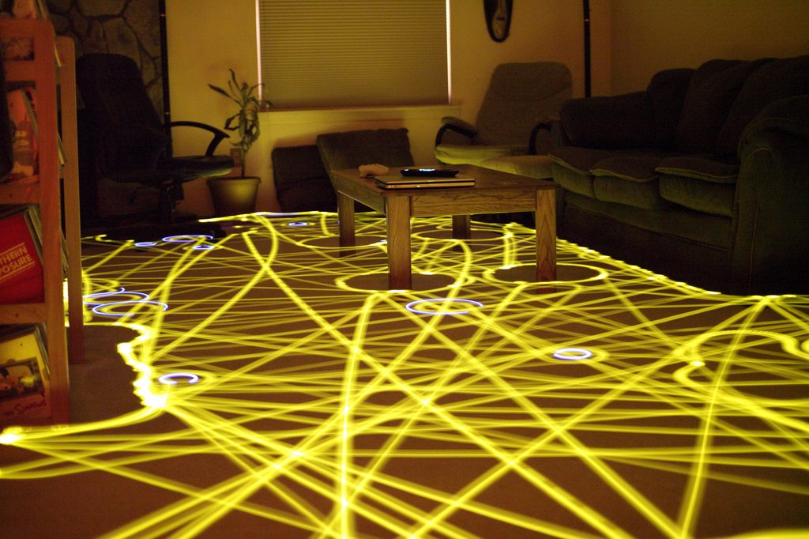
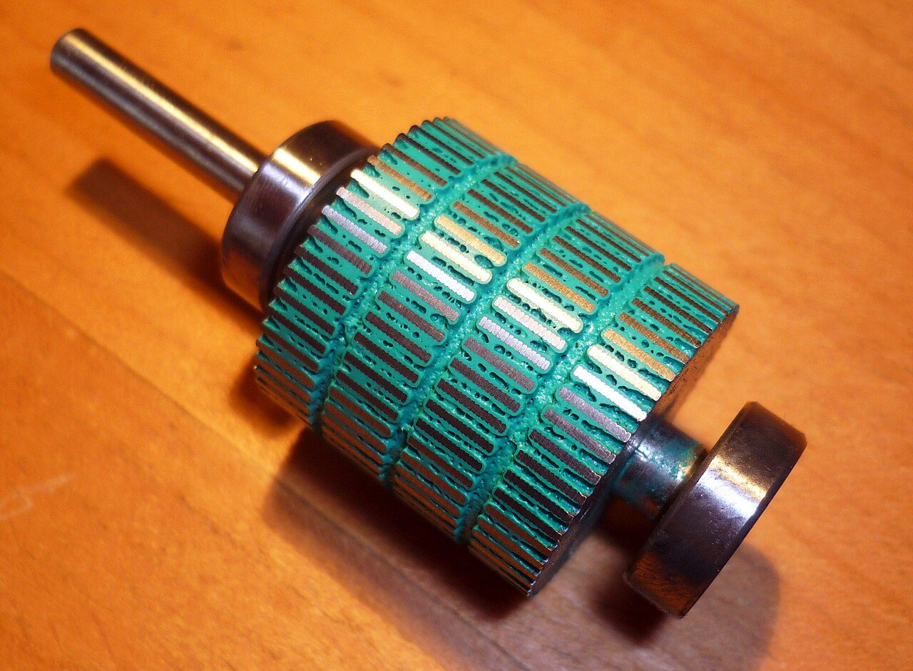
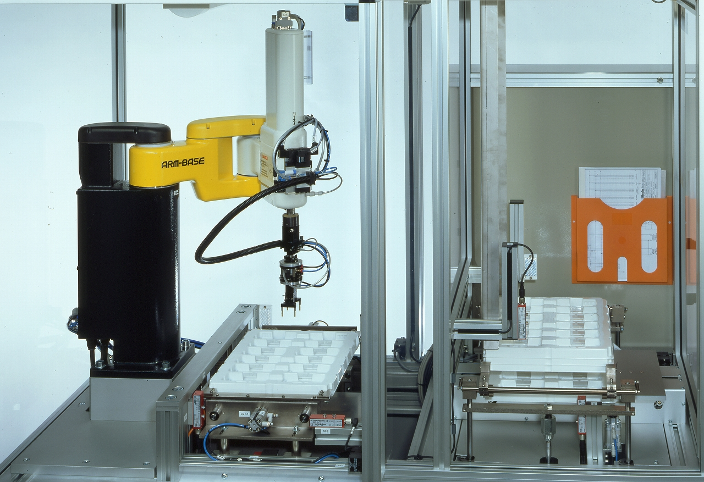
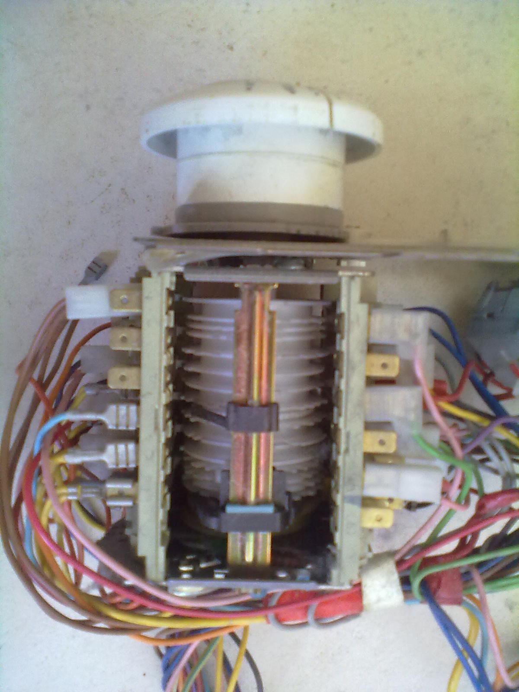

Un lavavajillas tiene programa, motores y sensores. Y no es un robot
La frontera útil no es el aspecto ni el programa: es si la máquina se entera de lo que hay fuera. Se ve fallar en un aula a la que alguien le ha movido las mesas.
Llevas tres unidades montando una máquina que se apaña sola. En la U4 hiciste que se corrigiera: un sensor mide, algo compara con la consigna y un actuador empuja hasta que el número cuadra. En la U5 le pusiste la electrónica que hace falta para mover algo de verdad. En la U6 la programaste y hasta la conectaste para que avisara desde lejos.
Y con todo eso dentro, a nadie se le ocurriría llamar robot a un horno.
De qué va esta unidad
Ya tienes una máquina que se corrige sola. ¿Qué le falta para moverse por el mundo y hacer algo útil sin que nadie la vigile?Voz sintetizada sobre guión propio. La boca sigue el volumen real de la voz.
Comparad la lista con la del grupo de al lado. No van a coincidir, y lo interesante es por qué. Las tres razones que aparecen siempre son estas, y las tres se caen solas:
- «Parece un muñeco». El brazo de la fábrica no se parece a nada vivo y todo el mundo lo llama robot; un peluche que anda se parece mucho y no lo es.
- «Se mueve». El ascensor se mueve, el molinillo se mueve, y la impresora 3D se mueve en tres ejes a la vez.
- «Tiene un programa». El lavavajillas tiene un programa y lo cumple entero. El semáforo también.
El lavavajillas tiene además sensores: un termóstato que mira la temperatura del agua y un pressóstato que mira el nivel. Así que «tener sensor» tampoco vale para separarlos. ¿Qué diferencia hay entonces entre lo que mira el lavavajillas y lo que mira el aspirador?
El lavavajillas se mira a sí mismo: su agua, su temperatura, su tiempo. Le da exactamente igual lo que haya dentro. Puedes meter dos platos o veinte, o ninguno, y el programa de 1 h 47 min dura 1 h 47 min. El aspirador, en cambio, se entera de lo que hay fuera: una pared, una pata de silla, una mochila que ayer no estaba.
Y de ahí sale la pregunta que sí separa las nueve máquinas de la lista, y que cabe en una línea:
Qué es un robot
Un robot es una máquina que percibe su entorno, decide a partir de lo que ha percibido y actúa sobre ese entorno, sin que nadie la esté llevando.
Son tres cosas, y hay que contestarlas por separado:
- ¿Percibe el entorno? No basta con tener sensores: hay que mirar qué miran. Un termóstato mira la máquina; un ultrasonidos mira el mundo.
- ¿Decide? O sea: ¿lo que hace depende de lo que ha percibido? Si hace lo mismo pase lo que pase, no decide, ejecuta.
- ¿Actúa sobre el entorno? Con motores, con una bomba, con una válvula. Un programa que solo escribe en una pantalla no actúa: informa.
Las tres a la vez, y sin que nadie lo vigile. Falla una y ya no lo es:
- El coche teledirigido falla la 1 y la 2: el que percibe y decide eres tú. Es un actuador con antena.
- El lavavajillas falla la 1 y la 2: sus sensores se miran a sí mismos y su programa no depende de nada de fuera.
- El semáforo de tiempo fijo falla la 1. El que lleva una espira en el asfalto que cuenta coches, no: ese percibe, decide y actúa. Está muchísimo más cerca de ser un robot de lo que parece.
El brazo de la fábrica de coches, en cambio, suele fallar la 1: repite una secuencia grabada y no mira nada. Todo el mundo lo llama robot, y en la industria se le llama así, pero lo que hace es de autómata: ejecutar. Por eso a esas celdas de fabricación se las rodea de vallas y se las vacía de gente: el brazo no se entera de que has entrado.
No te pelees con la palabra. Lo que sirve son las tres preguntas; la etiqueta la pone cada uno.
Y ahora míralo fallar
Aquí tienes un aula vista desde arriba, por casillas, y un robot que la limpia. Puedes ponerle tres cerebros distintos y luego, con un botón, mover los muebles. Empieza por el programa grabado con el aula como estaba, pulsa Hasta el final y anota el porcentaje. Después mueve los muebles y vuelve a mirarlo.
Lo que acabas de ver, con números
- Con el aula como el día que se grabó, el programa grabado cubre el 77,3 % en 242 pasos y con 24 choques. El del sensor, con la semilla 7, cubre el 74,7 % pero necesita 900 pasos y choca 60 veces. Gana el grabado, y no es raro: sabe por dónde ir.
- Mueve los muebles y el programa grabado se queda en el 47,2 %, con 124 choques. Ha perdido media aula. El del sensor sube al 79,7 %.
- Y lo importante no es el porcentaje: es que el grabado ha chocado 124 veces sin enterarse. Ha gastado los pasos igual, contra una mesa, como si estuviera limpiando.
Un robot no es una máquina más lista. Es una máquina que se entera.
Cambia la semilla del azar y vuelve a soltar el del sensor. Verás que unas veces cubre el 86 % y otras el 58 %: no da siempre lo mismo. El grabado, en cambio, da exactamente el mismo número todas las veces. Las dos cosas son verdad a la vez, y las dos cuentan a la hora de elegir: uno es previsible y frágil; el otro, robusto e irregular.

De dónde sale la palabra, y de dónde sale el rebote
La palabra es de teatro, no de ingeniería. La estrenó el checo Karel Čapek en su obra R.U.R., escrita en 1920 y estrenada en 1921. Viene de robota, que en checo antiguo es el trabajo forzado que debía un siervo a su señor. Čapek contó que la palabra se la propuso su hermano Josef, que era pintor. En la obra, los robots no son de metal: son de carne artificial, y acaban mal.
El rebote tampoco es de ahora. Entre 1948 y 1949, en Bristol, el neurofisiólogo W. Grey Walter construyó dos máquinas del tamaño de un casco, Elmer y Elsie, con dos válvulas, una célula que miraba la luz y un contacto que se cerraba al chocar. Con eso buscaban la luz, esquivaban obstáculos y volvían a cargarse solas. Walter las llamó tortugas, y dejó escrito lo que aquí interesa: con dos elementos que se miran el uno al otro ya aparece un comportamiento que parece intencionado. No hacía falta un cerebro grande; hacía falta realimentación, que es lo de la U4.
El aparato por dentro: dónde están los sensores de choque, los de desnivel y los motores. Vedlo con las tres preguntas del recuadro delante. El vídeo no se carga hasta que lo pulsas, y se reproduce sin cookies de seguimiento. Si la red del centro bloquea YouTube, ábrelo directamente aquí. El vídeo es de su autor y no forma parte del material publicado bajo la licencia de esta página.
Primera parte · los cuatro números (8 min)
Con la escena de arriba, con la semilla 7, y anotando en una tabla de cuatro columnas (cerebro, muebles, suelo cubierto, choques, pasos):
- Programa grabado + muebles como el día que se grabó. «Hasta el final». Anotad la fila.
- Programa grabado + muebles movidos. Anotad la fila.
- Sensor de choque con los dos juegos de muebles. Dos filas más.
Escribid debajo, en una frase, qué columna cambia mucho y cuál casi no, y por qué.
Segunda parte · el teledirigido (4 min)
Poned Teledirigido y conducidlo un minuto con los botones. Al acabar anotad: suelo cubierto, órdenes que habéis dado y lecturas de sensor. Contestad: si os vais de clase, ¿qué hace la máquina?
Tercera parte · vuestro proyecto (8 min)
Elegid dos de los proyectos del curso —por ejemplo el riego y el contenedor que avisa— y contestad para cada uno, por escrito, las tres preguntas del recuadro:
- ¿Qué percibe del entorno? (magnitud y sensor concreto)
- ¿Qué decide, y en función de qué?
- ¿Sobre qué actúa?
Y una cuarta: ¿es un robot? Contestad sí o no y defendedlo con vuestras tres respuestas. Las dos contestaciones pueden estar bien; lo que se corrige es el argumento.
Cómo se evalúa
- Las cuatro filas de la tabla, completas (3 puntos).
- La frase de qué columna cambia señala el programa grabado con los muebles movidos (1 punto).
- Los datos del teledirigido, con las órdenes contadas (1 punto).
- Las tres preguntas contestadas para los dos proyectos, con sensor concreto y no «un sensor» (3 puntos).
- La cuarta pregunta va razonada con las tres anteriores (2 puntos).
- ¿Por qué un lavavajillas no es un robot, si tiene programa, motores y sensores?
Ver respuesta
Porque sus sensores se miran a sí mismos (su agua, su temperatura) y lo que hace no depende de lo que haya fuera. Metas dos platos o veinte, el programa dura lo mismo. No percibe el entorno y no decide a partir de él: ejecuta.
- Las tres preguntas que hay que hacerle a una máquina, de memoria.
Ver respuesta
1. ¿Percibe el entorno? 2. ¿Lo que hace depende de lo que ha percibido? 3. ¿Actúa sobre ese entorno? Las tres, y sin que nadie la lleve.
- En la escena, el programa grabado pasa del 77 % al 47 % al mover los muebles, y encima choca 124 veces. ¿Cuál de las tres preguntas está fallando?
Ver respuesta
La primera. No percibe nada, así que tampoco puede fallar la segunda: no hay nada que decidir. Los 124 choques son la prueba: gasta los pasos contra una mesa exactamente igual que si estuviera limpiando, porque no distingue una cosa de la otra.
- Un brazo de una fábrica de coches repite la misma soldadura todo el día. ¿Es un robot?
Ver respuesta
Con las tres preguntas delante: no, porque no percibe el entorno; es un autómata muy bueno. La industria lo llama robot, y no pasa nada: lo que hay que saber es por qué hay que vallarlo. Si entras en su celda, el brazo no se entera.
Lectura del tema
Una sesión entera para leer y contestar, y conviene hacerla pronto: cuenta de dónde vienen las tres ideas de las sesiones siguientes, y las cuenta con tres casos reales con fecha. 30 párrafos numerados: cada uno lee el suyo en voz alta, en orden. Después, diez preguntas por escrito.
«Avanza medio metro»: cinco pruebas, cinco distancias
Un delay() mide tiempo, no distancia. Tres motores con el mismo encargo, y la pareja de palabras que hay que separar: exactitud y precisión.
Pasamos el robot de la sesión pasada del dibujo a la mesa. Dos motores, dos ruedas, una placa y una pila. Y el encargo más corto que existe:
Lo que sale en todas las clases es esto, y es razonable: se cronometra una vez cuánto tarda en recorrer medio metro —pongamos 2,3 segundos— y se escribe.
El primer intento
digitalWrite(motor, HIGH); delay(2300); digitalWrite(motor, LOW);
Y funciona. La primera vez.
- Lo repites tres veces seguidas: 51, 49 y 53 cm.
- Lo pruebas al día siguiente, con la pila de ayer: 38 cm.
- Lo pruebas en el aula de al lado, que tiene moqueta: 41 cm.
El programa no ha cambiado ni una coma en ninguna de las cinco pruebas. Entonces, ¿qué es exactamente lo que ha cambiado? Y sobre todo: ¿qué es lo que ese programa está midiendo de verdad?
Está midiendo tiempo. Tú querías distancia. Y esas dos cosas solo son lo mismo mientras la velocidad no cambie, que es justo lo único que no te puede garantizar nadie: la pila se gasta, la moqueta frena, el eje roza más cuando hace frío y el motor tarda en arrancar.
El problema de fondo no es el delay(). Es que ese motor no tiene ni
idea de dónde está, y tú le estás pidiendo que lo sepa.
Un actuador no es «un motor». Hay varios, y cada uno te promete una cosa distinta. Elegir mal no es que vaya despacio: es que no puedes escribir el programa.
Qué te promete cada motor
| motor | tú le dices | ¿sabe dónde está? | vueltas |
|---|---|---|---|
| Corriente continua | enciende / apaga | no, ni puede | sin fin |
| Servo | un ángulo | él sí; tú no | unos 180° |
| Paso a paso | un número de pasos | a base de contar | sin fin |
| CC + encoder | enciende, y él cuenta | sí, midiendo | sin fin |
El servo ya lo desmontaste en la U4: dentro hay un motor de corriente continua, una reductora, un potenciómetro pegado al eje y un circuito que compara. Es el lazo cerrado de la U4 metido en una caja de dos euros. Su pega en robótica es doble: no da la vuelta entera y no te contesta. Sabe que ha llegado; tú no te enteras.
Las cuentas del paso a paso
Paso angular: lo que gira el eje en un paso.
paso angular = 360° / pasos por vuelta → con 200 pasos: 1,8°
Milímetros por paso, con la rueda montada:
mm por paso = π · D / pasos por vuelta → con D = 65 mm y 200 pasos: π·65/200 = 1,021 mm
Pasos para recorrer una distancia:
n = distancia / (mm por paso), redondeando → 500 / 1,021 = 489,7 → 490 pasos
Ese redondeo ya te mete 0,3 mm de error, y no hay manera de quitarlo: el motor no sabe dar tres cuartos de paso.
Al banco de pruebas. El encargo es siempre el mismo —avanza 500 mm— y la escena lo intenta cinco veces con cada motor, con la física de cada uno. Empieza con todo como está y pasa por los tres.
Exactitud y precisión: no son sinónimos
Piensa en una diana con cinco flechas.
- Exactitud: si la media de los tiros cae en el centro. Lo que la estropea es un error sistemático, que está siempre y siempre hacia el mismo lado.
- Precisión (o repetibilidad): si los cinco tiros caen juntos, den donde den. Lo que la estropea es el ruido, que unas veces sobra y otras falta.
Y ahora, lo que sale en la escena con la rueda y el suelo de partida:
- CC por tiempo: dispersión de 19,2 mm. No es preciso, y con la pila al 70 % se queda en 346 mm: tampoco es exacto.
- Paso a paso: dispersión de 1,8 mm. Muy preciso. Ahora baja el diámetro real a 62 mm: la dispersión sigue en 1,7 mm y la media se va a 472 mm. Es preciso y está equivocado, que es la peor combinación, porque no hay manera de notarlo repitiendo.
- CC con encoder: parecido al paso a paso, y además no pierde pasos cuando le pides ir deprisa. Sube la velocidad a 400 mm/s y compara los dos.
Un error sistemático no se arregla repitiendo la medida. Se arregla encontrando la causa.
De dónde sale ese diámetro equivocado. Mides la rueda con un calibre, en la mano, y te da 65 mm. La montas, pones el robot encima y el neumático se aplasta: el radio de rodadura de verdad es un poco menor. Un 3 % de error en el diámetro es un 3 % de error en toda distancia que recorra, para siempre. Se mide al revés: se le manda dar diez vueltas, se mide con una cinta lo que ha recorrido y se divide. Eso se llama calibrar.
Y el encoder tampoco es magia. Cuenta lo que gira la rueda, no lo que avanza el robot. Si la rueda patina, el encoder dice que todo va perfecto. Por eso en la escena la moqueta le hace lo mismo que al paso a paso.

- Micropasos. El driver puede partir cada paso en 2, 4, 8 o 16 trozos. Eso sube la resolución y quita vibración, pero no sube la exactitud ni el par: las posiciones intermedias las sostiene la corriente, no un diente, y se pierden en cuanto hay carga.
- Un paso a paso parado consume. Para quedarse quieto tiene que seguir haciendo par, y eso son amperios yendo a calor. Un servo, igual. Si tu proyecto pasa el 90 % del tiempo esperando —el riego, por ejemplo—, eso hay que contarlo en el presupuesto de batería.
- Por qué las impresoras 3D llevan paso a paso. Porque la cabeza tiene que ir a un sitio exacto y volver, y no hay sitio para un encoder en cada eje. A cambio, si un eje pierde pasos, la pieza sale torcida y la impresora sigue tan contenta. Eso también lo has visto en la escena.
Cómo se mueve por dentro y cómo se elige uno. Es la pieza de la foto de arriba, en marcha. El vídeo no se carga hasta que lo pulsas, y se reproduce sin cookies de seguimiento. Si la red del centro bloquea YouTube, ábrelo directamente aquí. El vídeo es de su autor y no forma parte del material publicado bajo la licencia de esta página.
Primera parte · la tabla de los seis (8 min)
Con la escena, semilla 11, distancia 500 mm, y anotando media y dispersión en una tabla de seis filas:
- Los tres motores en baldosa, pila al 100 %, velocidad 200. Tres filas.
- Los tres motores otra vez, con la pila al 60 %. Tres filas más.
Debajo, dos frases: cuál es preciso y a cuál le afecta la pila, con los números delante. Y una tercera: ¿por qué a los otros dos la pila no les hace nada?
Segunda parte · las cuentas a mano (6 min)
Sin la escena, con calculadora y escribiendo todos los pasos con sus unidades:
- Motor de 200 pasos por vuelta con rueda de 65 mm: paso angular, mm por paso y pasos para 500 mm. ¿Cuánto se pasa o se queda corto por el redondeo?
- Motor de 48 pasos por vuelta con rueda de 42 mm: lo mismo. ¿Con cuál de los dos puedes afinar más?
- La rueda se aplasta y en vez de 65 mm rueda como si tuviera 63. Si el robot cree que ha andado 2 metros, ¿cuántos centímetros ha andado de verdad?
Tercera parte · el motor de vuestro proyecto (6 min)
Elegid dos de los proyectos del curso y, para cada uno, decid qué motor pondríais. Antes de elegir, contestad esta pregunta, que es la que manda: ¿qué necesito saber: nada, un ángulo, o una distancia?
- La bomba del riego: ¿hace falta saber dónde está el eje?
- La barrera del aparcamiento de bicis: sube 90° y baja 90°.
- La tapa del contenedor, o el brazo de la lámpara.
Cómo se evalúa
- La tabla de seis filas, con media y dispersión (3 puntos).
- Las tres frases, con números y no con impresiones (2 puntos).
- Las cuentas del paso a paso, con unidades en cada línea (2 puntos).
- La cuenta de la rueda aplastada, bien hecha (1 punto).
- Los dos motores elegidos, justificados con la pregunta de arriba (2 puntos).
- ¿Por qué
delay(2300)no sirve para avanzar medio metro?Ver respuesta
Porque mide tiempo, no distancia. Tiempo y distancia solo son lo mismo si la velocidad no cambia, y cambia con la carga de la pila, con el suelo, con el rozamiento y con lo que tarde el motor en arrancar.
- Un motor de 200 pasos por vuelta mueve una rueda de 65 mm. ¿Cuántos milímetros avanza en un paso?
Ver respuesta
El perímetro es π·65 = 204,2 mm, repartidos en 200 pasos: 1,021 mm por paso. Y el paso angular es 360/200 = 1,8°.
- Los cinco intentos caen en 472, 471, 473, 472 y 473 mm, y pedías 500. ¿Qué falla, y se arregla repitiendo?
Ver respuesta
Es preciso (los cinco caen en 2 mm) y no es exacto (se queda 28 mm corto, siempre para el mismo lado). Eso es un error sistemático, y no se arregla repitiendo: hay que buscar la causa, que casi siempre es el diámetro de la rueda mal medido o el deslizamiento del suelo.
- ¿Por qué se dice que un encoder «cierra el lazo» y un paso a paso no?
Ver respuesta
Porque el encoder mide el resultado y el programa puede corregir si no cuadra: es el lazo cerrado de la U4. El paso a paso trabaja en lazo abierto: manda pasos y da por hecho que se han dado. Si se pierde alguno, ni él ni el programa se enteran.
Con un servo llegas a una circunferencia. Y las macetas no están ahí
Cuántos grados de libertad hacen falta, dónde acaba la punta de un brazo de dos eslabones, y por qué el problema de la vuelta no tiene una respuesta sino dos.
Un encargo que vale para casi cualquiera de los proyectos del curso: un brazo encima de la mesa que tenga que llegar a varios sitios. El tubo del riego, que tiene que llegar a cuatro macetas. El foco de la lámpara, que tiene que apuntar a donde esté el libro. El sensor del contenedor, que tiene que asomarse a tres papeleras.
Empiezas con lo más sencillo que se puede montar: un servo atornillado a la mesa con un palo pegado al eje. Ya sabes de la sesión pasada que a un servo se le dice un ángulo y él se coloca.
Con ese único servo, y moviendo el ángulo de 0 a 180°, a qué puntos de la mesa puede llegar la punta del palo? Dibújalo en la libreta antes de seguir. No es «a toda la mesa».
A una circunferencia, y a nada más. La punta está siempre a la misma distancia del eje, así que solo puede recorrer el borde de un círculo. Si las macetas no están justo en ese borde, mala suerte.
Así que pones otro servo en la punta del primer palo, con otro palo. Ahora la punta ya no está atada a una circunferencia: llega a casi toda la mesa. Con dos motores lo has arreglado.
Y eso, con dos motores, no se puede. Puedes elegir el sitio; la inclinación con la que llegas te sale la que te salga. Lo que falta tiene nombre, y se cuenta.
Grados de libertad
Grado de libertad (GdL): cada movimiento independiente que puede hacer un mecanismo. Un servo que gira = 1. Un carro que sube y baja = 1. Dos servos encadenados = 2.
La regla, que es toda la sesión en una línea:
hacen falta tantos grados de libertad como cosas quieras controlar a la vez
- En un plano: la posición son 2 números (x, y) → 2 GdL. Si además quieres la orientación, 3.
- En el espacio: 3 para la posición (x, y, z) y 3 para la orientación → 6 GdL. Por eso los brazos de fábrica tienen seis ejes: no es capricho, es el número justo.
- Con más de los necesarios (7 o más) el brazo puede llegar al mismo sitio de infinitas maneras, y eso sirve para esquivar obstáculos. Es lo que tiene tu brazo: mueve el codo sin mover la mano.

De los ángulos al sitio
Tienes dos servos. Sabes ponerlos en el ángulo que quieras. Falta la cuenta que te dice dónde acaba la punta, y no es difícil: es un triángulo detrás de otro.
Cinemática directa de un brazo plano de dos eslabones
Con el hombro en el origen, L₁ y L₂ las longitudes de los dos eslabones, θ₁ el ángulo del hombro medido desde el eje x y θ₂ el del codo:
x = L₁·cos θ₁ + L₂·cos(θ₁ + θ₂)
y = L₁·sen θ₁ + L₂·sen(θ₁ + θ₂)
Se lee como lo que es: vas al codo (primer sumando) y desde el codo sigues (segundo sumando).
⚠ El error de todos los años. θ₂ se mide respecto al primer eslabón, no respecto al suelo. Por eso en el segundo sumando aparece θ₁ + θ₂ y no θ₂ a secas. Si pones solo θ₂, la cuenta funciona mientras θ₁ valga cero y falla en cuanto muevas el hombro, que es lo peor que puede pasar: parece que va bien.
Espacio de trabajo
Espacio de trabajo: todos los puntos a los que la punta puede llegar. En este brazo es una corona circular:
radio máximo = L₁ + L₂ radio mínimo = |L₁ − L₂|
El máximo es el brazo estirado del todo; el mínimo, doblado del todo sobre sí mismo. Si L₁ = L₂ el agujero del centro desaparece y el espacio de trabajo es un círculo entero. Si son muy distintos, queda un agujero grande justo delante del robot, que es donde suele estar lo que quieres coger.
A la escena. Mueve los cuatro mandos y sigue la cuenta línea a línea en la tabla de la derecha: los números que ves son los de las dos fórmulas de arriba con tus ángulos metidos.
El problema de la vuelta, que es el que necesitas
La cuenta que acabas de hacer se llama cinemática directa: de los ángulos al sitio. Y ahora fíjate en que no es la que te hace falta. A ti nadie te da ángulos: a ti te dan una maceta y tienes que averiguar los ángulos. Eso es la cinemática inversa.
No la vamos a resolver aquí: las cuentas son de Bachillerato. Pero pon la escena en Poner un objetivo, pincha en el cuadro y mira lo que te dice, porque lo importante de este problema no son las cuentas, son estas tres cosas:
Tres cosas que hay que saber del problema inverso
- Puede no haber solución. Si el punto está más lejos que L₁+L₂ o más cerca que |L₁−L₂|, no hay ángulos que valgan. No es que el programa sea malo: es que no existen.
- Normalmente hay dos. Al mismo punto se llega con el codo hacia un lado o hacia el otro. Las dos son correctas, así que alguien tiene que elegir: y se elige mirando con cuál no chocas contra la pared, contra la maceta de al lado o contra tu propio cable.
- Con más grados de libertad hay infinitas. Con un brazo de 7 ejes puedes poner la mano en un sitio y mover el codo sin que la mano se entere. Esa es la ventaja y esa es la complicación.
«Directa» e «inversa» suenan al revés de lo que esperarías, porque la útil es la inversa. Los nombres vienen de la física: directo es el problema que va de las causas (los ángulos de los motores, que son lo que tú mandas) al efecto (dónde acaba la punta), e inverso es el que va del efecto a las causas. Los problemas inversos casi siempre son más duros, y casi siempre son los que hacen falta.
Y aquí vuelve la sesión 2
Pon el mando de error de cada servo en 1° y mira la mancha roja que aparece en la punta.
El error de una articulación se multiplica por el brazo
Un ángulo pequeño ε, en radianes, a una distancia L del eje, mueve la punta:
error en la punta ≈ L · ε con ε(rad) = ε(°) · π / 180
Un grado son 0,01745 radianes. Así que 1° de error en el hombro, con el brazo estirado 210 mm, son 210 · 0,01745 = 3,7 mm en la punta. Si además el codo se equivoca otro grado, se suman.
De aquí salen dos decisiones de diseño, y son vuestras:
- Brazo más corto → menos error en la punta, menos alcance. Se paga con una cosa o con la otra.
- Si necesitas precisión, el dinero se gasta en el hombro, que es el que más multiplica, no en la muñeca.
Cuando mires un catálogo de robots, verás que dan la repetibilidad («±0,02 mm») y casi nunca la exactitud. Es la misma pareja de palabras de la sesión 2, y no es por disimular: un brazo industrial vuelve al mismo punto con una fidelidad asombrosa, pero acertar la primera vez en unas coordenadas que nunca ha visto es muchísimo más difícil, porque para eso tendría que conocer sus propias longitudes con esa misma exactitud. Por eso, en la industria, a un brazo se le enseñan los puntos llevándolo a mano, uno a uno.
El mismo brazo de la escena, con las dos cuentas hechas a mano en la pizarra. La parte de la inversa es de nivel Bachillerato: sirve para ver de dónde salen los dos codos. El vídeo no se carga hasta que lo pulsas, y se reproduce sin cookies de seguimiento. Si la red del centro bloquea YouTube, ábrelo directamente aquí. El vídeo es de su autor y no forma parte del material publicado bajo la licencia de esta página.
Primera parte · la cuenta, y comprobarla (6 min)
Con L₁ = 120 mm y L₂ = 90 mm, anotad en una tabla la posición de la punta para estos cuatro juegos de ángulos:
- θ₁ = 0°, θ₂ = 0°
- θ₁ = 90°, θ₂ = 0°
- θ₁ = 0°, θ₂ = 90°
- θ₁ = 35°, θ₂ = 60°
El tercero lo hacéis a mano, con la calculadora en grados y escribiendo los cuatro sumandos, y después lo comparáis con la escena. Si no os da lo mismo, mirad si habéis escrito θ₁+θ₂ donde tocaba.
Segunda parte · el espacio de trabajo (5 min)
Con esas mismas longitudes, calculad el radio máximo y el mínimo y dibujad la corona en la libreta a escala 1:2 (1 mm de papel = 2 mm de brazo), con el compás.
Poned luego en la escena un objetivo a unos 40 mm del hombro y otro a unos 250 mm. Copiad lo que dice la escena en cada caso y explicad con la fórmula por qué no llega.
Tercera parte · los dos codos (4 min)
Poned un objetivo que sí esté dentro y anotad los dos pares de ángulos. Pulsad los dos botones para ver el brazo en cada postura. Escribid: si hubiera una pared a la izquierda del robot, cuál de las dos elegiríais y por qué.
Cuarta parte · el error (5 min)
Con el error de servo a 1°, anotad los milímetros de la punta con L₁=120/L₂=90 y luego con L₁=160/L₂=140. Comprobad uno de los dos con la fórmula L · ε. Decidid para vuestro proyecto: ¿brazo largo o corto? Una frase, con el número dentro.
Cómo se evalúa
- Los cuatro puntos de la tabla (2 puntos).
- El tercero hecho a mano, con los cuatro sumandos escritos (2 puntos).
- La corona dibujada a escala, con sus dos radios (2 puntos).
- Los dos casos que no llegan, explicados con la fórmula (1 punto).
- Los dos codos anotados y la elección razonada (1,5 puntos).
- El error en milímetros, comprobado con L·ε (1,5 puntos).
- ¿Cuántos grados de libertad hacen falta para poner una pieza en un sitio del espacio y con una inclinación concreta?
Ver respuesta
Seis: tres para la posición (x, y, z) y tres para la orientación. Por eso los brazos industriales clásicos tienen seis ejes. Un SCARA tiene cuatro porque para dejar piezas en una bandeja no hace falta inclinarlas.
- Escribe la cinemática directa del brazo de dos eslabones, y di dónde está la trampa.
Ver respuesta
x = L₁cosθ₁ + L₂cos(θ₁+θ₂), y = L₁senθ₁ + L₂sen(θ₁+θ₂). La trampa es el θ₁+θ₂: el ángulo del codo se mide respecto al primer eslabón, así que hay que sumarle el del hombro. Con θ₁=0 no se nota, y ahí está el peligro.
- L₁ = 120 mm y L₂ = 90 mm. ¿Puede la punta llegar a un punto que está a 25 mm del hombro?
Ver respuesta
No. El radio mínimo es |120 − 90| = 30 mm: el brazo, doblado del todo sobre sí mismo, no se acerca más. Ese punto está en el agujero del espacio de trabajo, y no hay ángulos que valgan.
- Tus dos servos se equivocan 1° cada uno y el brazo mide 210 mm estirado. ¿De cuántos milímetros estamos hablando en la punta?
Ver respuesta
1° = 0,01745 rad. Solo el hombro ya mueve la punta 210 · 0,01745 = 3,7 mm, y el codo suma lo suyo. Del orden de medio centímetro. Por eso el error angular se paga caro: se multiplica por la longitud del brazo.
if y
delay() y en una tarde tendrás un programa que no entiende ni quien lo
escribió.
Un delay() no es una pausa: es un rato sin mirar
Cuatro estados, cinco eventos y veinte casillas que hay que contestar una a una. Las que dejes en blanco son por donde se rompe.
La barrera del aparcamiento de bicis, esa cuyo par ya calculaste en la U4. El encargo cabe en una línea: si alguien pasa la tarjeta, la barrera sube, espera un poco y baja.
El primer programa, que sale solo
void loop() {
if (tarjetaValida()) {
subirBarrera();
delay(3000);
delay(5000); // la barrera, esperando
bajarBarrera();
delay(3000);
}
}
Diez líneas, funciona a la primera y se entiende. Y entonces empiezan las preguntas de clase, que son todas razonables:
¿Y si cuando toca bajar hay alguien debajo?
¿Y si el fin de carrera no llega nunca porque algo la ha atascado?
¿Y si pasan dos tarjetas seguidas?
Intentadlo. Cada pregunta se arregla añadiendo una variable
(bool subiendo, bool hayAlguien…) y un
if más. A la tercera, el programa tiene seis banderas y nadie es capaz de
decir qué hace si se levantan dos a la vez. A eso se le llama código
espagueti, y no se arregla escribiendo mejor: se arregla cambiando de herramienta.
Antes de las banderas hay un problema más gordo, y está en la línea
delay(3000). ¿Qué está haciendo la placa durante esos
tres segundos? Y sobre todo: ¿qué NO está haciendo?
No está mirando. Un delay() no es una pausa: es un rato en el que el
programa se va del mundo. Si durante esos tres segundos alguien se mete debajo de la
barrera, la placa no se entera —ni entonces ni después—, porque ese
evento no se ha guardado en ningún sitio. Simplemente pasó mientras
nadie miraba.
La herramienta que ordena esto no se inventó para Arduino ni para robots. Se usa en los semáforos, en los ascensores, en los cajeros y en los protocolos de internet, y consiste en dejar de preguntarse «¿qué hago ahora?» para preguntarse «¿dónde estoy, y qué acaba de llegar?».
Máquina de estados
Una máquina de estados finitos es una forma de escribir un automatismo con cuatro piezas:
- Estados: la lista, cerrada, de situaciones en las que puede estar el sistema. La barrera está cerrada, subiendo, abierta o bajando. En una, y solo en una.
- Eventos: lo que puede llegar de fuera. Una tarjeta, un fin de carrera que se cierra, un sensor que se activa, un segundo que pasa.
- Transiciones: qué evento te lleva de qué estado a qué otro.
- Acciones: lo que se hace mientras estás en cada estado (motor subiendo, bomba parada, luz encendida).
La regla de oro: en cada vuelta de loop() se mira una vez
qué ha llegado y se decide una vez. Y por lo tanto: ni un
delay(). El tiempo se mide con millis(), que te dice
cuántos milisegundos lleva encendida la placa sin parar el programa.
La tabla de transiciones
Se dibuja una tabla con los estados en las filas y los eventos en las columnas. Cuatro estados y cinco eventos son 4 × 5 = 20 casillas.
Y hay que contestarlas todas, una a una, aunque muchas respuestas sean «no hacer nada». Esa es toda la gracia del método: la tabla te obliga a plantearte casos que no se te habrían ocurrido nunca, como «¿y si llega una tarjeta mientras baja?».
Las casillas que dejes en blanco son, exactamente, por donde se va a romper el automatismo el día que lo pongas en el pasillo.
Abajo tienes la máquina montada y funcionando. Pulsa los eventos y mira tres cosas a la vez: el diagrama, la línea de código que te toca y la tabla de casillas, que se va encendiendo. El reto es encenderlas las veinte.
Y cuando la tengas dominada, cambia a Espagueti con delay() y repite la jugada.
Código · la línea de tu estado
Tabla de transiciones · se enciende la casilla que visitas
Cómo se escribe en Arduino
- Los estados, con nombre, no con números:
enum Estado { CERRADA, SUBIENDO, ABIERTA, BAJANDO }; - Una sola variable:
Estado estado = CERRADA; - Dentro de
loop(), unswitch (estado)con uncasepor estado, y dentro de cadacaselas transiciones que salen de él. Nunca uncasesin subreak;. - Para esperar: al entrar en el estado se guarda
t0 = millis();y en cada vuelta se compruebaif (millis() - t0 > ESPERA) ...
Mira las dos versiones de código de la escena, una al lado de la otra. La de estados es más larga; también es la única que se puede leer dentro de un mes y la única en la que se puede añadir un caso sin romper los otros.
Y la misma máquina sirve para los tres proyectos
Cambia la piel de la escena a Riego y a Contenedor: los estados se llaman de otra manera, los eventos también, y las flechas son las mismas.
| Barrera | Riego | Contenedor | |
|---|---|---|---|
| reposo | cerrada | en espera | vigilando |
| actuando | subiendo | regando | avisando |
| manteniendo | abierta | dejando calar | aviso puesto |
| volviendo | bajando | cerrando | apagando |
Eso no es casualidad: reposo → actuar → mantener → volver es el esqueleto de casi cualquier automatismo de un ciclo. Cuando montes el tuyo, empieza por ahí y luego añade lo que le falte.

Un detalle de millis() que se cobra caro. millis()
devuelve un unsigned long de 4 bytes, así que llega hasta
4.294.967.295 milisegundos y después vuelve a cero. Eso son
49 días y 17 horas. Es la misma trampa del desbordamiento de la U6, ahora en
un aparato que se queda enchufado en un pasillo.
Lo bueno es que tiene arreglo, y es gratis: escribir siempre
millis() - t0 > ESPERA y nunca
millis() > t0 + ESPERA. La primera forma funciona incluso el día que
el contador da la vuelta, porque la resta entre enteros sin signo también da la
vuelta y el resultado sale bien. La segunda se queda colgada hasta 49 días.
Y de dónde viene todo esto. La idea es de mucho antes que los ordenadores domésticos: Warren McCulloch y Walter Pitts la publicaron en 1943 pensando en neuronas, y en los cincuenta le pusieron forma George H. Mealy (1955) y Edward F. Moore (1956), los dos en los laboratorios Bell. La diferencia entre los dos modelos que llevan su nombre cabe en una línea: en una máquina de Moore la salida depende solo del estado; en una de Mealy depende del estado y del evento. Lo que has usado aquí es de Moore, que es la que se lee mejor.
Un automatismo real con millis() y transiciones por tiempo, sin un solo delay(). Es el paso siguiente al código de la escena. El vídeo no se carga hasta que lo pulsas, y se reproduce sin
cookies de seguimiento. Si la red del centro bloquea YouTube,
ábrelo
directamente aquí. El vídeo es de su autor y no forma parte del material
publicado bajo la licencia de esta página.
Primera parte · cubrir la tabla (5 min)
En la escena, en modo Máquina de estados, pulsad eventos hasta que se enciendan las veinte casillas. Anotad:
- Cuántos eventos os ha costado.
- Cuáles han sido las tres últimas en encenderse. No es casualidad: son las que nadie prueba nunca.
- Copiad en la libreta, de esas tres, qué dice la escena que pasa.
Segunda parte · el espagueti (4 min)
Cambiad a Espagueti con delay() y reiniciad. Pulsad la petición para arrancar la secuencia y, mientras corre, id pulsando «hay alguien debajo» y los demás eventos. Anotad los eventos perdidos y las veces que ha bajado con alguien debajo.
Escribid dos frases: qué habría pasado con una barrera de verdad, y por qué el programa no puede arreglarlo después.
Tercera parte · la tabla de vuestro proyecto (6 min)
Elegid dos de los proyectos del curso y, para cada uno:
- La lista de estados (tres, cuatro o cinco; no más).
- La lista de eventos, incluyendo uno de seguridad y el paso del tiempo.
- La tabla dibujada y rellena entera, con «no hace nada» donde toque.
Marcad con un círculo las casillas que no se os habían ocurrido hasta dibujar la tabla. Esas son las que valen la actividad.
Cómo se evalúa
- Las veinte casillas cubiertas y las tres últimas anotadas (2 puntos).
- Los datos del espagueti, con las dos frases (2 puntos).
- Estados y eventos de los dos proyectos, con su evento de seguridad (2 puntos).
- Las dos tablas completas: ni una casilla en blanco (3 puntos).
- Las casillas marcadas con círculo, y son de verdad las raras (1 punto).
- ¿Qué cuatro piezas tiene una máquina de estados?
Ver respuesta
Estados (en cuál estás, y solo en uno), eventos (lo que puede llegar), transiciones (qué evento te lleva de dónde a dónde) y acciones (lo que se hace mientras estás en cada estado).
- ¿Por qué se prohíbe
delay()y se usamillis()?Ver respuesta
Porque durante un
delay()el programa no mira nada: los eventos que llegan se pierden sin dejar rastro. Conmillis()el programa sigue dando vueltas alloop()y solo comprueba si ya ha pasado el tiempo. - Tu automatismo lleva enchufado en el pasillo dos meses y se queda colgado un día. ¿Qué sería lo primero que mirarías?
Ver respuesta
Si has escrito
millis() > t0 + ESPERA.millis()da la vuelta a los 49 días y 17 horas, y escrito así el automatismo se queda esperando. Escritomillis() - t0 > ESPERAfunciona igual antes y después de la vuelta. - ¿Por qué la misma máquina de cuatro estados sirve para la barrera, para el riego y para el contenedor?
Ver respuesta
Porque los tres son automatismos de un ciclo: reposo → actuar → mantener → volver. Lo que cambia son los rótulos y qué sensor dispara cada evento; las flechas son las mismas. Por eso conviene empezar siempre por ese esqueleto.
Lo que tiene que haber quedado de estas cuatro sesiones
1. ¿Cuál es la pregunta que mejor separa un robot de una máquina automática cualquiera?
2. En la escena de la sesión 1, al mover los muebles el programa grabado baja del 77 % al 47 % y choca 124 veces. ¿Qué le falta?
3. ¿Por qué digitalWrite(motor, HIGH); delay(2300); no sirve para avanzar medio metro?
4. Un motor paso a paso de 200 pasos por vuelta mueve una rueda de 65 mm de diámetro. ¿Cuánto avanza en un paso?
5. Los cinco intentos de un robot dan 472, 471, 473, 472 y 473 mm, y habías pedido 500. ¿Cómo se llama eso y cómo se arregla?
6. ¿Cuántos grados de libertad hacen falta para dejar una pieza en un punto del espacio con una inclinación determinada?
7. En el brazo de dos eslabones, ¿por qué la segunda parte de la fórmula lleva cos(θ₁+θ₂) y no cos θ₂?
8. Pones un objetivo dentro del espacio de trabajo del brazo de dos eslabones. ¿Cuántos juegos de ángulos lo alcanzan?
9. ¿Qué es lo que hace de verdad delay(3000) dentro de un automatismo?
millis().10. Un automatismo con 4 estados y 5 eventos. ¿Cuántas casillas tiene su tabla de transiciones y cuántas hay que contestar?
Se corrige en tu propio navegador: no se envía ni se guarda nada. Las explicaciones aparecen al corregir, tanto en las que aciertes como en las que falles.
Sesión 5 en preparación
Sesión 6 en preparación
Sesión 7 en preparación
Sesión 8 en preparación
Lectura de aula
Treinta párrafos numerados y diez preguntas. Ocupa una sesión entera: se lee en voz alta por turnos, un párrafo cada uno, y luego se contesta por escrito. Trae su cabecera para el nombre, el grupo y la fecha.
Descargar el PDFLicencia y uso
Tema 7 · Robótica y automatismos · © 2026 Roberto P. García Llorente, Profesor de Tecnología en Educación Secundaria.
Publicado bajo Creative Commons Reconocimiento-CompartirIgual 4.0 Internacional. Puedes copiarlo, adaptarlo y redistribuirlo, incluso con fines comerciales, siempre que cites la autoría, indiques si lo has modificado y publiques tus versiones derivadas con esta misma licencia.
Cómo citar
Roberto P. García Llorente (2026). Tema 7 · Robótica y automatismos. https://rgllorente82-png.github.io/robertotecnologia/4eso/Tecnologia/tema7/. Bajo licencia CC BY-SA 4.0.
Qué cubre
Los textos, los dibujos y el código de esta página, que son obra propia.
No cubre las fotografías, que proceden de Wikimedia Commons y conservan su propia licencia, indicada bajo cada una. Algunas son de dominio público; las demás están bajo licencias Creative Commons compatibles con esta, y se reproducen citando autoría y licencia como exigen. Tampoco cubre las tipografías, de Google Fonts con su propia licencia.
Otros usos
Para usos que excedan la licencia, abre una incidencia en el repositorio del proyecto.